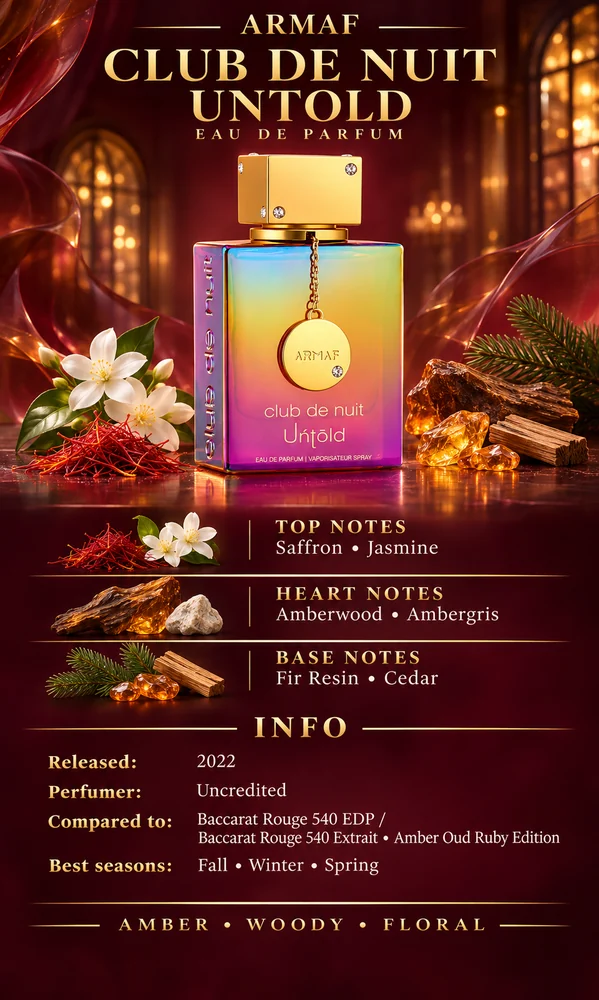
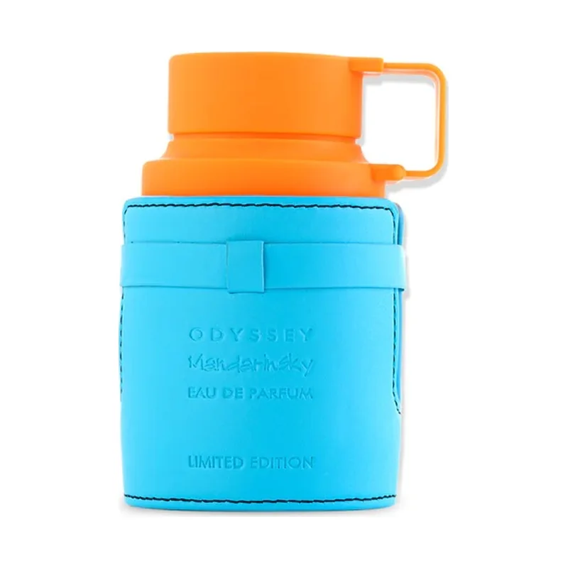

Armaf
Club de Nuit Untold Eau de Parfum
γ Gamma Inspired by · Eau de Parfum · 2022 In collection
Randy's rating5.5/10
Public rating8/10
Overall R14.05/21
Normalized N0.669
R = 5.5 × 1.1 + 8 × 1 = 14.05 of 21 · N = 14.05 ÷ 21 = 0.669 How scores work
Notes
Top notes
- saffron
- jasmine
Heart notes
- amberwood
- ambergris
Base notes
- fir resin
- cedar
Details
| House | Armaf |
|---|---|
| Type | Inspired by · γ Gamma |
| Concentration | Eau de Parfum |
| Released | 2022 |
| Perfumer | — |
| Scent family | Woody, Aromatic, Amber & Resin |
| Best seasons | Spring, Fall, Winter |
| Similar to | Maison Francis Kurkdjian Baccarat Rouge 540 Eau de Parfum Maison Francis Kurkdjian Baccarat Rouge 540 Extrait de Parfum Al Haramain Amber Oud Ruby Edition |
Sources
Fragrantica 4.05/5 (about 8.1/10) from 3,786 votes; Parfumo 7.7/10 from 415 ratings. Synthesized and rounded to 8. Checked 2026-11-06.
Other Suggestions
-
 ArmafKing CheckmateRandy8Public 9N 0.848
ArmafKing CheckmateRandy8Public 9N 0.848 -
 ArmafClub de Nuit Intense Man Eau de ToiletteRandy6.75Public 8N 0.735
ArmafClub de Nuit Intense Man Eau de ToiletteRandy6.75Public 8N 0.735 -
 ArmafOdyssey Aqua Edition Eau de ParfumRandy6Public 9N 0.743
ArmafOdyssey Aqua Edition Eau de ParfumRandy6Public 9N 0.743 -

ArmafOdyssey Mandarin Sky Eau de ParfumRandy8.5Public 8N 0.826 -
 ChanelBleu de Chanel ParfumRandy9.5Public 9N 0.926
ChanelBleu de Chanel ParfumRandy9.5Public 9N 0.926